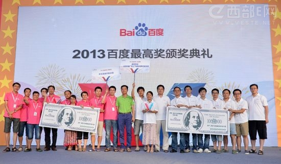
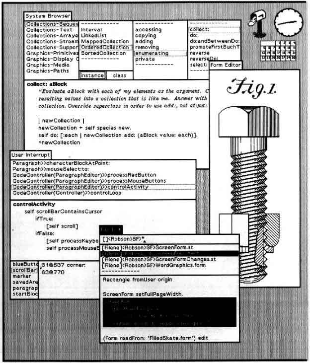

35年来主导中国经济的三架马车：出口、投资、和消费正在发生变化【图1】（参考），北京的一系列动作体现着对这一变化做出的迅速调整，主要围绕在政府职能的重新厘清、GDP中劳动生产力和全要素生产率（参考）、以及依托全面富裕来促进消费需求。
【图1】35年来主导中国经济的三架马车：出口、投资、和消费正在发生变化
在这个背景下，中国式创新的概念又被提上重要日程，北京认为，创新不但是中国企业从人力、资源和规模集约型模式转型技术、资本和品牌集约型模式转型的根基、也是政府组织形式改革、释放“闲不住的手”（参考）的途经。
关于中国式创新的讨论一直持续不断，海外对于中国的印象正在发生“不太情愿的”改变，这使得对于中国创新本身产生了支持与反对两种观点，我搜索和阅读大量近期关于中国式创新的文章，尝试梳理出大致的观点，并提出了我自己的思考。
观点
公司表现
支持者：出现了一些世界关注的公司
中国出现了一些在创新方面引起国际广泛关注的公司，小米和阿里巴巴被BCG归入The Up-and-Coming Companies in 2013，BCG对这个区间内公司的描述是“在社交媒体、移动应用、云服务等领域有重大创新的公司”，同入榜单的还有Groupon, Pinterest等互联网公司。
在FastCompany的2013年最具创新力的公司榜单中，腾讯排名第16，FC对它的评价是：让中国人都开始说话。
中国区第二的是一家叫作Landwasher（蓝洁士）的公司，他们是中国各种庆典活动的流动厕所提供商【图2】，在它之下的是Evernote。这是唯一进入世界50强的中国公司。

【图2】进入FastCompany世界创新榜前50的两家中国公司之一是一家叫作Landwasher（蓝洁士）的公司，他们是中国各种庆典活动的流动厕所提供商
另外一个被广泛提到的创新公司是华为，BBC将华为称作“隐秘的科技巨人”,澳大利亚时代报称华为和中兴成为世界范围内国际专利申请最多的公司前5，“世界创新的力量论正在迅速转移”
麦肯锡的报告中提到位于北京的BGI北京基因研究所，其研发能力已经占到了世界50%强，开始占据传统欧美日韩把持的领域。金融时报重点报道了BGI，把BGI看作是中国创新觉醒的典范。
而福布斯在2012年世界最具创新力公司评比中，百度排名世界第5，亚洲第1；腾讯列为世界11，亚洲第4；茅台列为世界18，亚洲第6；五粮液列为世界第20，亚洲第8。这项评比的三个主要因素是：12个月的增长、5年的投资回报率、创新溢价（指投资者多大程度上会为公司的未来买单）。
反对者：只是异像，不是创新的典范
而另一部分反对者则认为：
小米只是异像（But these (Xiaomi) are the outliers）
中国公司的所谓创新并不是颠覆式的创新，而是增益式的创新（Incremental Innovation）。
创新的本质是挑战权威和程度风险，大量中国国有企业受政府政策的保护，没有承担风险的驱动力，更不会挑战权威，缺乏市场经济主导的中国企业环境导致中国企业进行颠覆性创新的内因不足。
麦肯锡的报告中也总结：中国依然还未经历一个真正的创新革命，它依然在技术转让中获得的增益创新模式向自主突破性创新模式转变的过程中。
事实上，创新本身就是颠覆型或改进型（Radical or Incremental）之争，一篇关于中国是否能够创新的论文总结：
Western firms’ preconceptions about China’s slowness in radical innovation are misplaced. They must prepare for a tsunami of competition from China-based multinationals, which increasingly see the markets of the developed world as their targets. Multinationals must actively participate in innovation in China with the aim of using China as a platform for global innovations..
同时文章也提到，缺乏颠覆性创新本身不单单只是中国独有，很多国家也有这样的问题，颠覆性创新是长时间积攒增益式创新的结果，而非一蹴而就，另一篇关于在低收入国家增益式创新的研究表明中国和印度等低收入新兴市场国家的创新模式主要为增益式创新，这一现象是由诸多因素决定而非主观意愿。
政府表现
支持者：政府主导的大规模投入使得中国创新后劲十足
中国的研发投入已经在2011年超过日本成为世界第二大的研发投入国，中国的研发投入在过去二十年里一直保持12%至20%的增速（来源），至2013年中国的研发投入有望突破2200亿，中国预计在2023年超过美国（来源）【图3】。
【图3】至2013年中国的研发投入有望突破2200亿，中国预计在2023年超过美国。
大规模科研投入的背后代表着北京愈发明显诉求，中国希望在新的一个经济周期中实现各个领域产业结构的升级，目前在出口商品结构上已经开始体现这种变化。
中国的资本品（Capital goods）和零部件（Parts and commponents）占整体出口商品的比重逐年增加（来源）图【4】，有一部分由市场需求和进口市场方政策保护原因导致，也不能忽视出口企业为寻求出口商品结构升级所做出的努力，努力的背后是巨大的研发投入。

【图4】中国的资本品（Capital goods）和零部件（Parts and commponents）占整体出口商品的比重逐年增加。
反对者：政治体制反而限制中国创新
受欧美对中国政治体制的传统观念影响，有许多反对的声音指出，这种大投入的科研投入是“面子工程”，北京所期待的在“乒乓球的成功”也能复制到创新领域。
中国的科研投入被认为是在不断刷新类似超级计算机记录的“抓眼球的事件”，而对基础科学的投资非常少，较美国的19%，中国对基础学科的投入只有5%（参考）。
有种观点认为缺少私有化经济的中国缺乏创新所必要的经济因素：自由市场、竞争、风险机制。矛头所指在政府庇护下的国有企业，因为缺乏承担风险的魄力、市场公平竞争的压力，无法实现真正意义上引领行业甚至创造行业的创新（参考）。
中国企业在研发投入只占到总共6380亿美元投入的3.2%，低于世界平均6.9%的水平，远远低于北美的39%水平【图5】。(来源)
【图5】中国企业在研发投入只占到总共6380亿美元投入的3.2%，低于世界平均6.9%的水平，远远低于北美的39%水平。
因此政府主导的这场所谓变革中，投入和产出并不成比例，相反产生了一个效率极低的创新系统：美国和欧洲专利与商标局中中国成功申请者的比例只有1.8%和1.2%，同样，日本的比例为20%和19.6%；另外汤森路透评选的世界前100创新组织中不包含任何一家中国公司。（来源）
教育表现
支持者：教育领域对创新的投入
中国政府对教育领域投资势头从07年开始有巨大增幅，相较美国而言高等教育毕业生数量逐年增加，专科以上学历人数接近800万（来源）。预计到2015年，中国的教育总投资将达到1.6万亿美元，占到整个经济支出的8%，是2010年3%的近3倍【图6】（来源）
【图6】中美近年高等教育入学人数占世界比例增长；中美专科以上学历比较；中国教育支出增长情况。
华盛顿邮报关于中国创新的一篇文章表示：
China’s real advantage lies in its next generation — the students who graduate from its top colleges and become entrepreneurs.
同时麦肯锡在其关于中国创新引擎增速的分析文章中将“寻找中国高校作为创新伙伴”作为2013年给企业在中国创新战略的第一条策略。部分中国大学开始招募世界最好的相关研究者、与国内外企业充分合作建立创新中心，学术文章的发表数，以科学界衡量科学竞争力的自然杂志例，中国在2007年至2012年间，NPI自然杂志发表指数增长了近40%，2012年自然杂志发表303篇【图7】，在生命科学、物理、化学、地球和环境科学领域都有较强的表现。（来源）。
【图7】中国在2007年至2012年间，NPI自然杂志发表指数增长了近40%，2012年自然杂志发表303篇。
自然杂志2012年的年度报告中将中国科学院作为中国创新的引擎（Engine of Innovation）（来源）,2011年科技转化产生了2.7亿美元的利润，同时，700家和中国科学院的合作企业总共产生了13.8亿的净利润。
反对者：教育制度不成熟，学术环境糟糕
对于中国教育体系的批评和质疑不绝于耳，首先对中国工程类毕业生人数的质疑，华盛顿邮报2005年发文：
These numbers (600,000 Chinese engineering graduates) attained seemingly impeccable credibility when they were featured in a press release
文章认为中国所谓的“工程师”最多只相当于美国的“技工（technicians）”水平。麦肯锡也有相关分析文章指出对中国人才能力缺失的担忧:
We call this the “supply paradox”: there are shortages of good hires even though there appear to be plenty of qualified people.（来源）
自然杂志也曾经发文批评中国的博士生制度（来源），中国的博士生人数一跃成为世界最多博士国家【图8】，自然杂志对此的评价是：
The main problem is the low quality of many graduates.
【图8】中国的博士人数一跃成为世界最多的国家。
知识产权保护表现
支持者：专利申请和知识产权意识的提升
对中国创新的乐观者通常摆出中国近年来在专利申请和知识产权保护方面的成绩。中国已经替代美国成为世界最大专利申请国，经济学人在今年1月的一篇文章中把正视专利价值作为中国式创新的表现（来源）。
中兴公司连续两年成为世界专利申请第一的申请者（来源）排名第四则是另外一家中国电信设备提供商—华为【图9】。
【图9】中兴公司连续两年成为世界专利申请第一的申请者。
麦肯锡的报告指出，中国政府已经意识到对知识产权的保护是创新文化的重要一环，整个知识产权的法律基础也在30年里逐步完成。
反对者：专利制度和知识产权保护的失败
经济学人的一篇文章指出了专利申请火爆现象背后的玄机：申请专利可以帮助学生或员工获得户口、企业申请专利可以获得25%至15%不等的减税优惠、更容易获得政府订单等。
另外一个主要的挑战在于，中国所申请的专利大量属于“实用新型专利”（Utility Model Patents）其技术水平和创造性较发明类专利低。
统计表明2010年中国的实用新型专利的申请量已经占到全世界的83%（参考）
从【图10】的比较来看，中美两国的实用新型专利的数量比较有巨大的差异（http://ipstatsdb.wipo.org/ipstatv2/ipstats/utilitymodelSearch）：
此外，美国和欧洲专利与商标局中中国成功申请者的比例只有1.8%和1.2%，同样，日本的比例为20%和19.6%。（来源）
【图10】中美两国的实用新型专利的数量比较有巨大的差异。
美国《外交》杂志2013年10月撰文指出：
America’s superior protection of IP rights will help it retain its lead over China in technological innovation.
文章着重强调现代创新需要更多私有和公共组织国际间的协作，而中国糟糕的知识产权保护环境使得中国较难获得国际协作（来源）。
创新文化表现
支持者：已经出现了好的创新生态环境
多篇文章指出了中国的生态环境中出现了需要有利于创新的因素，这些创新因素包括：超过一千家的早期技术孵化器在中国运营、中国最好的大学学习美国建立自己的创新实验室、创业文化在企业中的盛行。
华尔街日报在分析中国创新问题的文章（来源）中指出中国目前的风险投资产业发展迅速，已经有超过1000所的技术孵化器在中国运营，以刺激和扶持早期的创业公司；同时像清华大学这样中国的顶尖高校也开始创办自己的校内孵化器—“创新实验室”。
金融时报关于中国创新觉醒的文章（来源）中也提到了中国企业内部对创新的鼓励，例如百度的“百万美元”创新大赛【图11】。

【图11】百度的“百万美元”创新大赛。
反对者：创新体制糟糕
另一部分反对的声音则认为中国社会广泛缺乏创新文化，从教育制度对创造性思维的扼杀——李开复在接受新闻周刊时的回答：
The Chinese education system makes people hard-working, teaches people strong fundamentals, and makes them very good at rote learning,” Lee says. “It doesn’t make them creative original thinkers.
到中国社会同质化的批评，认为创新的核心在于文化、人种、语言的多样性，而中国的同质化(homogeneity)社会不具备这种力量（来源）。
中国的政治体制也成为阻碍创新的因素之一，华尔街日报撰文指出：
Beijing seems to expect that creative professionals will be able to thrive in an environment where they can't network on Facebook or voice freewheeling opinions on any topic, business or political, under the sun.
现有一些原本鼓励创新的经济手段却因为监管问题流产，哈佛商业评论一文指出中国版纳斯达克创业板几年前曾经旨在帮助创业企业成长，却在短时间内成为内幕交易者获利渠道（参考）。
无论从教育体系、社会形态、政治体制、经济措施多个方面，中国都还不具备创新的有利局面，整个的生态系统还未成熟。
思考
通过梳理世界对中国创新的看法，也使我们充分梳理了中国式创新的来龙去脉，从中有客观事实，也有一厢情愿的过度解读，更有出于对中国刻板印象的偏见，
所广泛争执的，是创新本身的定义，当大部分人说中国没有在创新时，他们所谈论的是他们没有像乔布斯、或是盖茨那样改变行业和世界的创新，却并没有否认中国所擅长的，是把欧美的先进技术学（tōu）过来，在他们的环境里改进，最后变成自己的东西。
这种争执的本身是对颠覆性创新（disruptive innovation）和增益性创新（incremental innovation）没有太多意义的纠缠。
更有趣的是，当这种纠缠产生时，他们所念叨的也只是“你们没有乔布斯，你们没有盖茨，你们没有乔布斯，你们没有盖茨，你们没有乔布斯，你们没有盖茨”。
却没有几个去了解，盖茨先生最早的创新是在MITS的Altair 8800上装一个BASIC解析器（来源），乔布斯先生参观施乐的PARC研究所看到Alto原型机【图12】后决定开发GUI接口的新电脑Lisa（来源）。

【图12】施乐Alto图形界面。
颠覆性创新本身就不是意欲而为的，它是创新的某一种结果，一种概率很小的结果，更不是目的。
另外一种争执总是夹杂着对政治体制的偏见。
依然有大量的欧美人民认为，西方民主制度使美国人民的收入从1950年到2012年提高了30倍（来源），于是任何经济的繁荣和稳定的社会都应该按照这样的解决方法进行，如果没有，便不是一条正确的路，如果还能成功，那一定是对世界最大的威胁。
西方民主制度的一元论依然存在，它使得在讨论中国问题上显得越来越无趣，也使得存有偏见的一方拒绝学习和真正深入了解。
在2013年12月的美国《连线》杂志中有一篇关于对“两个比尔”盖茨和克林顿先生的访谈，克林顿先生的一句话很有意思，他说：
America needs to stop majoring in the minors. That is, we need to look more at what other countries are now doing better than we are and learn from it instead of being in denial about it.
创新的最初目的是提升社会财富积累的效率、减少社会财富过程中对环境和社会的副作用，保护长久以来的社会繁荣，那么评价中国是否正在创新的标准就是在这两方面：多积攒了多少社会财富、多减少了多少环境和社会破坏。
《经济学人》一场关于中国创新的辩论，开题是：中国是否会超过美国成为一股新的创新力量？
看到这里，你心里的答案是什么？